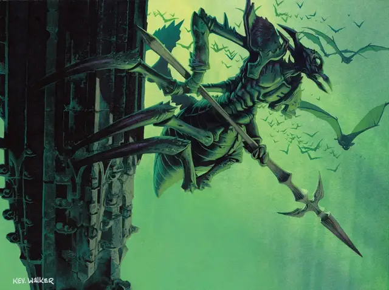

Воитель краулов
Kraul Warrior
Средний Гуманоид (Краул), нейтрально-злой

Класс Доспеха 18 (природный доспех)
Хиты 27 (5к8 + 5)
Скорость 30 футов, лазая 30 футов
| мод | спас | ||
|---|---|---|---|
| СИЛ | 15 | +2 | +2 |
| ЛОВ | 12 | +1 | +1 |
| ТЕЛ | 13 | +1 | +1 |
| мод | спас | ||
|---|---|---|---|
| ИНТ | 10 | +0 | +0 |
| МДР | 11 | +0 | +0 |
| ХАР | 8 | −1 | −1 |
Чувства тёмное зрение 60 футов, пассивное Восприятие 11
Языки Краул, понимает Общий, но не говорит на нём
Опасность 1/2 (100 опыта)
Бонус мастерства +2
Особенности
Коллективный разум. Краул обладает иммунитетом к состояниям очарованный и испуганный, если находится на расстоянии до 30 футов от другого краула.
Тактика стаи. Краул совершает атаку против существа с преимуществом если хотя бы один из союзников краула находится в пределах 5 футов от существа и союзник дееспособен.
Паучье лазание. Краул может карабкаться по сложным поверхностям, в том числе вверх ногами по потолку, без необходимости совершать проверки характеристик.
КРЫЛАТЫЕ Воители-КРАУЛЫ. Некоторые воители-краулы обладают скоростью полета до 40 футов, благодаря своим тонким крыльям. Их крылья дают им более высокое положение среди воителей-краулов. Крылатые воители-краулы служат гильдии в качестве разведчиков и ударных отрядов.
Действия
Копьё. . Дальнобойная или рукопашная атака оружием: +4 к попаданию, досягаемость 5 фт. или дистанция 20/60 фт., одна цель. Попадание: 5 (1к6 + 2) колющего урона или 6 (1к8 + 2) колющего урона, если используется двумя руками для рукопашной атаки.
Описание
Общество краулов организовано по четко определенным ролям и кастам. Подавляющее большинство краулов занимают различные чины, от командиров и элитных войск до низшей пехоты.
Краулы
Краулы — влиятельная группа внутри Роя Голгари, долгое время довольствовавшаяся тем, что задерживалась на окраинах подземного города, но теперь все чаще их гудящие голоса звучат в подземном зале гильдии Голгари. Эти шестиногие насекомоподобные существа упрямы и мыслят буквально, плохо разбираются в метафорах или нюансах.